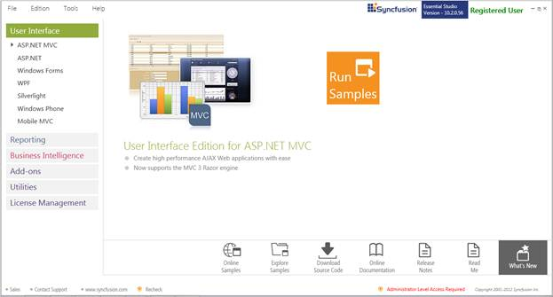
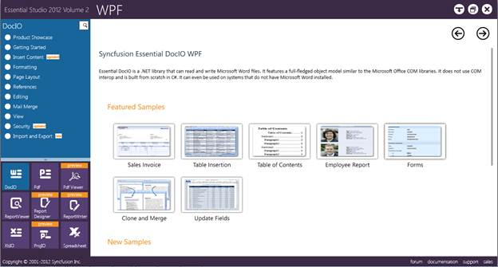
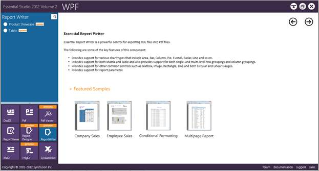

This section covers the location of the installed samples and describes the procedure to run the samples through the sample browser and online. It also lists the location of utilities, assemblies, and source code.
Viewing Samples Installed on the Disk
The Report Writer for WPF samples are installed locally on the disk in the following location.
<InstallLocation>\Syncfusion\EssentialStudio\<VersionNumber>\Samples\Reports\WPF\ReportWriter.WPF\Samples
Viewing Samples on the Dashboard
To access the samples in the dashboard perform the following steps:
1. Click Start>All Programs>Syncfusion>Essential Studio <version number> >Dashboard.
The Essential Studio Enterprise Edition dashboard is displayed. The User Interface edition panel is displayed by default.

Figure 1: Essential Studio Dashboard
2. Select the Reporting edition panel.

Figure 2: Essential Studio Reporting Dashboard
3. Select WPF from the samples listed. The following options will be displayed. You can view the samples in the following three ways:
· Run Samples—View the locally installed Report Writer samples for WPF using the sample browser.
· Online Samples—View the online samples for WPF.
· Explore Samples—Locate the WPF samples on the disk.

Figure 3: Essential Studio Reporting WPF Dashboard
4. Click Report Writer from the bottom-left pane.

Figure 4: Essential Studio WPF Report Writer Samples